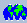

Main OpenEV Window
The main OpenEV display window contains the geospatial data viewing
area, as well as menus and an iconbar. The button and key sequences for
manipulating view state are decribed in the separate
View Area Button/Key Sequences page.
The area at the bottom of the view window is the track tool and
display position and raster value under the cursor. Details preferences
for controlling the tracking tool are available in the application
preferences panel (Edit->Preferences).
Icon Bar
-
- Open File:
Open a raster or vector file, and add to this view. Same as File->Open.
-
- Print:
Launch the Printing Dialog to print the current
view.
-
- Remove Enhancement:
Remove any greyscale enhancement lut (such as applied by the equalize
icon) from the active raster layer. Does nothing if no raster layer is
selected in the layers dialog.
Note that a linear scaling stretch will still be in effect for
non-eight bit data.

- Linear Enhancement:
Perform a linear stretch enhancement.
-
- Histogram Equalization:
Apply a histogram equalization enhancement LUT to the active raster. This
is a non-linear constrast stretch intended to flatten out the post-enhancement
histogram. See the GvRasterLayer::equalize() method in pymod/gview.py for
details on the algorithm used. Does nothing if a raster layer is not
selected in the layers dialog.
-
- Logarithmic Enhancement:
Perform a logarithmic stretch enhancement. The enhancment lut is recomputed
to map the minimum to zero, the maximum to 255 and intermediate values
based on logarithmic scaling. See GvRasterLayer::log() for algorithmic
details.

- Windowed Raster Re-enhancement:
Recompute the last enhancement (linear, equalize, logarithmic) based on
pixels currently visible in the view. The scaling min/max and enhancement
are recomputed. In 3D mode substantial numbers of pixels not actually
visible in the view may be included in the calculation.
-
- Classify Raster:
Launches a dialog for applying a pseudo-color classification to a single
raster band. This is a GIS style classification, not a multispectral
classification. The dialog can only be launched if a raster layer is
selected. The dialog is not currently further documented.

- Show Legend:
Launches a dialog displaying the current classification legend generated
by the Classify Raster dialog. If there is no classification in force on
the current raster, or if no raster layer is selected nothing will
happen.
-
- Fit all Layers:
Resets the view position, and zoom level such that all the data in all
view layers is shown. As currently implemented the any rotation is lost.

- Zoom Control:
Displays the zoom level of the currently selected raster layer. A value of
1:2 would indicate decimation by 2, while 2:1 would indicate duplication
of raw pixels by a factor of two. The user can selected a desired zoom level
from popup menu, or directly type in zoom ratios. The control has no
effect when a non-raster layer is selected.
-
- Zoom In:
Zoom in (making features bigger) by a factor of 2.
-
- Zoom Out:
Zoom out (making features larger) by a factor of 2.

- Refresh Raster from Disk:
Causes the current raster layer to be reloaded from disk, or from it's
source Numeric Python array. There are various levels of caching applied
in OpenEV, and data is normally only re-read from disk when not available
in memory. If a file is updated on disk (or a display numerical python
array is updated) the refresh function can be used to force the display
to be resyncronized from the source data. Applies to the active raster layer.
If no raster layer is active nothing happens.
- 
- Georeferenced Display:
When the black and white icon is visible, the view is being displayed
in raw pixel/line coordinates for the source raster. When the color icon
is displayed the view is trying to display in georeferenced units (if
any are available). Selecting this icon will toggle the state. This
icon is generally used to switch between raw and warped images for images
that include control points that will define a polynomial warp (such as
many CEOS images). The initial state of this icon is determined by the
"Display Georeferenced" control on the Raster tab of the
Preferences dialog.
-
- Online Help:
Launch the OpenEV online help, the same as Help->Help.
-
- Online Help:
Launch the OpenEV online help, the same as Help->Help.
-
- Busy/Idle Indicator:
The red icon shows when the application is busy, and the green icon
displays when the application is idle. Due to the background loading of
data the application will often be busy for a short time after initially
displaying a raster. Pressing the icon has no effect, and even when the
application is busy it should remain responsive if somewhat more sluggish
than when idle.
Menus
File
- Import
- Import raster for optimized access. The user is prompted to select
a raster data file. This is converted into tiled GeoTIFF format in the current
working directory, overview levels are built, and the imported file is
added to the current view (as if it had been opened).
The imported file is optimized for fast access, but may lose some information
from the source file (such as metadata). Note that vector files cannot
be imported.
- Open
- Open a raster or vector file, and add it to the current view as a new
layer. For files with a greater than eight bit data type, min/max values
will be computed for scaling purposes. The resulting layer will be assigned
the name of the source file.
- Open 3D
- Brings up a dialog for selection of a drape and elevation raster. They
are added to the current view as a 3D image, and the view is placed in 3D
mode.
- Save Vector Layer
- Brings up a file selector for entry of a filename to save the active
vector layer to. The file saved to will be in ESRI Shapefile format. ESRI
Shapefiles can only support one type of geometry per file (point, line, area)
so if the active layer has a mixture, only one of the types (the first
encountered) will be saved. Feature attributes are only saved if they are
described by a schema on the layer, as is the case with vectors loaded
from a shapefile.
- New View
- Creates a new OpenEV view window with an independent set of data
layers, and makes it the current view.
- Print
- Launches the Printing Dialog for printing
the view contents.
- Recent Filenames
- A list of recently opened files is maintained in this menu. Selecting
one is equivelent to doing a File->Open, and entering the displayed name.
- Close
- Close the current window. If this is the last main display window for
this OpenEV process the user is prompted if they want to exit the
whole process.
- Exit
- Close all windows, and terminate OpenEV. The user is prompted for
confirmation.
Edit
- Undo
- Undoes the last undoable operation. Currently only the various
vector editing operations are undoable. View changes, layer property
changes and addition or deletion of layers are not undable. The undo
stack is not bounded, and so in theory
many undo steps are available; however, certain operations, like destruction
of undoable layers results in clearing of the entire undo stack.
- Layers...
- Launches the Layer Management Dialog for
manipulating view layers.
- Vector Layer Attributes...
- Launches the vector features attributes dialog for inspecting, and
changing the attributes of the selected feature.
- Edit Toolbar...
- Launches the Edit Tools for controlling
editing mode.
- Go To...
- Launches a simple dialog for recentering the view around a particular
georeferenced location.
- Python Shell...
- Launches a Python Shell. This is a
dialog for interactively entering Python commands for simple image
processing and other scripting needs.
- 3D Position...
- Launches a dialog for setting the 3D view position and direction.
- Preferences...
- Launches the application preferences panel for viewing, and modifying
application wide preferences.
- Python Shell...
- Launches the python shell for doing numerical python operations.
- 3D Position...
- Launches the 3D position dialog for viewing, and modifying the 3D view
position.
Help
Note that online help is displayed as HTML
files, and OpenEV needs access to an HTML viewing application. On Windows
the default system HTML viewer is used. On Unix various well known browsers
are searched for (ie. netscape, Mosaic). The user can customize this in the
application preferences panel available under Edit->Preferences.
The help topic for most dialogs can be launched directly by hitting F1 after
clicking on the dialog.
- Help
- Displays application help.
- Web Page
- Displays the OpenEV web page.
- About
- Display OpenEV information, and credits.